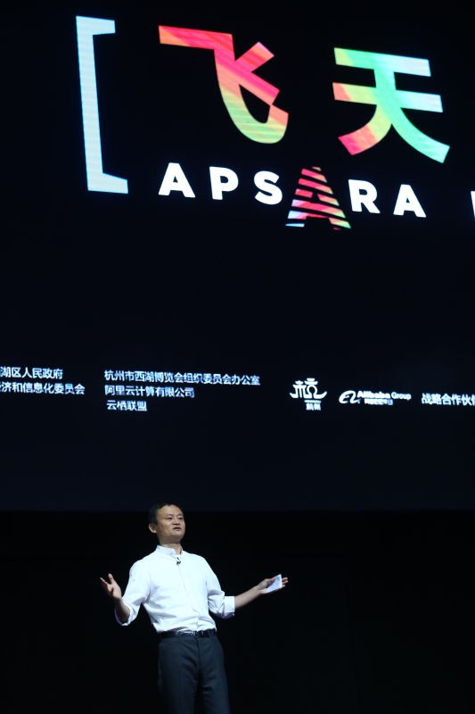

马云：“电子商务”将消失 新五通一平将引领未来
2016-10-10 14:27:08 来源:新华网
( 原标题:马云：“电子商务”将消失 新五通一平将引领未来 )
杭州云栖大会现场。新华网 摄
2016年10月13日上午，阿里巴巴集团董事局主席马云出席杭州云栖大会时提出，未来30年是人类社会天翻地覆的30年，世界的变化将远远超出想象，“电子商务”这个词很快会被淘汰，有五个新的发展将会深刻地影响到世界。
“1995年我创业的时候，全世界互联网的用户可能不到5万人，今天参与云栖大会的观众就已经接近5万人，21年的变化，令世界震撼。”一开场，马云就用两组极具冲击力的数据谈到技术对世界的影响，吸引了全场观众。
马云称，未来的30年，技术会应用到方方面面，社会各行各业，但人们对此没有足够意识。
“很多人讲互联网在冲击各行各业，电子商务在打击、摧毁传统商业，事实上电子商务并没有冲击传统的商业。”马云说，电子商务只是把握并用好了互联网的技术和理念，产生了一种适应互联网数据时代的商业模式；真正冲击各行各业、冲击就业、冲击传统思想、传统行业的是人们昨天的思想，是对未来的无知、是对未来的不拥抱。
马云举例，“电子商务”这个词可能很快就被淘汰，阿里巴巴从明年开始将不再提“电子商务”这一说法，因为这只是一个“摆渡的船”，未来有五个全新发展将深刻地影响中国、世界和所有人。
这五个“新”，指的是新零售、新制造、新金融、新技术和新能源，马云称将对各行各业造成巨大的影响，成为决定未来成败的关键。未来政府招商，也必须关注新的“五通一平”，一平是指提供一个公平创业的环境和竞争的环境。“我不希望把它变成危言耸听的警示，而是当作改变自己的机遇，从现在开始。”马云说。
马云同时表示，未来30年的这次技术革命，每个人都有机会，各国小企业的机会也会越来越多。“以前创业你可能要钱，你可能要资源，你可能要各种各样的关系。未来只要利用技术、数据和创新，人人将会有机会。”
马云认为，未来世界的竞争是创新的竞争，是年轻人的竞争，他呼吁各国政府为未来30年制定创新发展的政策，为30岁以下的年轻人和30人以下的小企业制定独特的扶持政策。
最后，马云提醒年轻人，未来并不可怕，可怕的是对未来的无知。他用人类恐惧外星文明举例，霍金讲人类千万不要和从外星来的人沟通，因为这很可怕，就像大家觉得电子商务互联网大数据冲击力这么可怕、不要跟它沟通一样。其实对于外星文明，越是一无所知，越是拒绝沟通，越可怕，互联网是一样的道理。“互联网文明不是从外星来的，它是人类文明诞生的成果，只要去把握它、学习它，就不可能被淘汰；谁去抵触未来、不把握未来、不改变自己的今天，那一定会被历史所淘汰。”
( 文章为原作者观点，不代表英迈信息立场。)
本文来源:新华网